welcome to my phoenix shrine !! click the buttons in the menu to navigate through the different sections!
discography


phoenix is a french band formed in 1995. the members, unchanged since then, are thomas mars, christian mazzalai, deck d'arcy, and laurent brancowitz. their sound has changed through the years but it can mainly be labeled as indie rock and synth-pop. they have released seven studio albums.
i found phoenix randomly in a french music playlist around 2019. the first song i heard and that i was instantly obsessed with was if i ever feel better, and i remember exploring more of their discography a while after. but i don't know exactly when it is that it transitioned from a band that i'd listen to ocassionally, to a band that constantly gives me so much joy, that i could listen to on repeat endlessly, that means so much to me that its hard to put it into words... i've always mainly listened to noisy electronic music so i don't really know why this indie/synth pop band ended up having such a big place in my heart and in my mind, but i am very grateful it did because they make me incredibly happy... I LOVE THEM SO MUCH IM GONNA EXPLODE

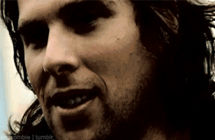
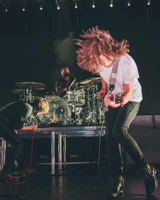
i don't think i've ever loved a band or artist as much as i love them. not only i absolutely love their music as a listener, but their authenticity, the effort and passion they put into everything they make, their love for music, and their unique and weird writing methods inspire me to be a better artist as well. (even if my music is nothing alike lol!!) they probably have the most random and sometimes nonsensical lyrics out of all of the artists i listen to, yet their music resonates with me in a really wonderful way. and i think thats amazing... they made me realize you don't have to obsess over meaning to transmit something beautiful through music, because their music as a whole is a sincere expression of themselves, the people and things they love, their passion for music, their friendship and their life experiences. and that is so beautiful in itself bankrupt! is my favorite album, it is SO precious to me just because i love how expressive and noisy it is... i get emotional only thinking about it LOL this synth pop band means so much to me
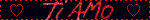

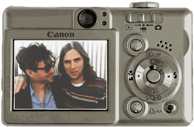
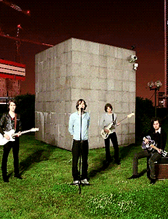
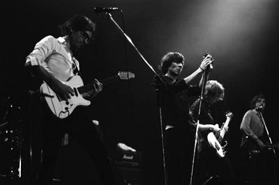
my favorite...
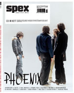
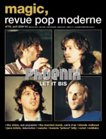
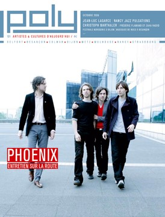
 video
video
this isn't my favorite song or performance (in fact it sounds pretty bad LOL) but its still very very dear to me... this is 2014, first time phoenix is touring in south america after the release of their most successful album, and this was probably the first track on the setlist. i always love to see artists' reactions to south american crowds (even if im not particularly a fan) so watching my favorite band have such a good time here melted my heart lol. thomas' reaction to the crowd singing the chorus loud as fuck makes me so happyyyy. i wasn't here because i was busy being 11 years old or whatever but i get the same feeling from this video that from the ones recorded in the show i did go to, just everyone excited to be there, lots of love for music, and everyone being in the same wavelength. wish i could find the full performance somewhere oughhhhh
albums
i dont have a definitive second favorite album it changes all the time... but i do love how bankrupt and ti amo complement each other and here is why!
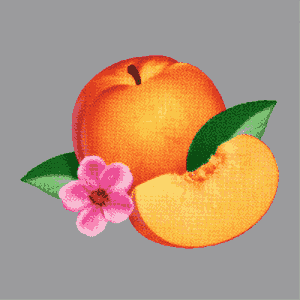
bankrupt!
(2013)
the way i personally interpret it, bankrupt is about dealing with insecurities, loneliness, jealousy, and misunderstandings. the production is noisy, loud, synthetic, overcompressed, saturated and over the top, which is why i love it the most lol! it feels like the only thing it cares about is getting its message across, through any means possible. (to think that a lot of people hate this album because it's "overproduced"... YOU DON'T GET ITTT!!) this album has so many layers, i love that even after hearing it a million times i still find little details that i hadn't heard before. the lyrics are confusing as ever, but every once in a while they suddenly get very straightforward, and those moments of clarity feel so sincere and special. this album feels like catching up with someone who is telling you about their life and how things have not been going as well as they used to some years ago. it does have a slightly positive tone surfacing every once in a while however, as if they were confident that not all hope is lost as long as they're not alone, and that it's a feeling that will pass soon. did i mention its my favorite
ti amo, released 4 years later, is a complete 180. it's so romantic, careless and sweet in every way, as you can tell by the 80s pop syntheziser sounds and the lyrics. it's pretty clear in its message: it's about loving someone so much that you don't care about anything else. it's about obsessions (healthy and unhealthy ones), longing, infatuation, and finding confidence, freedom and happiness in being with the one you love. parts of the lyrics are in italian, french and spanish, which all contribute to making you feel like you're on a trip overseas with the love of your life. at the same time, i think there's more to it than just that. mainly in some of the latter songs, among all of the sweetness, it gets a little bitter: what happens when you're alone again, or apart from your partner? are you still so confident and careless? what happens when you're not being constantly reassured? the album ends with lyrics about being alone. it's kinda like the two albums are in an infinite loop... its so cool lol
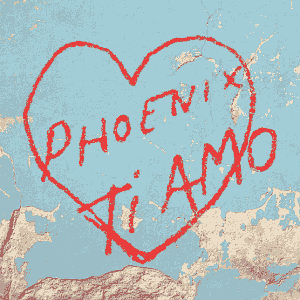
ti amo
(2017)
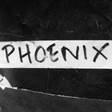
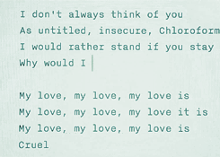
collection
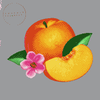
 bankrupt!
bankrupt!
2013
this was a gift! very very happy to own my favorite album on vinyl :3 came with a link to download all of the songs in wav format!
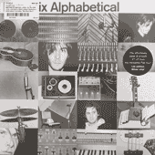
alphabetical
2026 limited edition reissue
a record store day reissue! this was my first phoenix vinyl and also my first vinyl ever lol so im very fond of it... it's a gorgeous silver color!!
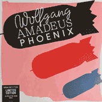
wolfgang amadeus phoenix
2022 limited edition reissue
IT GLOWS IN THE DARK I REPEAT IT GLOWS IN THE FUCKING DARKKKKK also came with a download link!
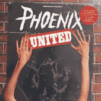
united
2026 limited edition reissue
another record store day reissue! this one is crystal clear... so pretty...
vinyl!
"united" 25th anniversary tshirt!! so cool i had to get it... i tried to buy it like 4 times and every single time the shop cancelled my order but on my fourth attempt when they were about to sell out I FUCKING GOT IT LOL and im very glad i did.. i have a new favorite shirt
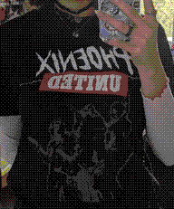
united t-shirt
both were made in argentina which is pretty cool lol!! back when CDs actually used be available in local stores... the bankrupt one was still sealed from 2013 (it isnt anymore lol) and the ti amo CD has a cute sleeve that i love but its also annoying how it doesnt fit in my cd holder T.T
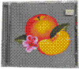
CDs
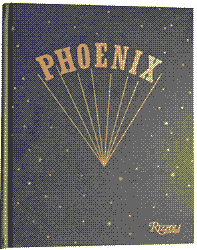
please take a look at my GORGEOUS beautiful book... literally just having this in my hands makes me SO DAMN HAPPYY  i cannot explain how blessed i feel for being able to read the story about how my favorite albums in the world were made. reading this book really made me appreciate their work, and each album, even more. suddenly it all has much more depth, when i remember how much work it takes to make a piece of art such as an album, and how deeply influenced it is by the things happening in your life. now i cant help but smile when i listen to united and think about these french dudes living in an absolute mess of an apartment, trying to make music unlike anything else anyone had heard before...
i cannot explain how blessed i feel for being able to read the story about how my favorite albums in the world were made. reading this book really made me appreciate their work, and each album, even more. suddenly it all has much more depth, when i remember how much work it takes to make a piece of art such as an album, and how deeply influenced it is by the things happening in your life. now i cant help but smile when i listen to united and think about these french dudes living in an absolute mess of an apartment, trying to make music unlike anything else anyone had heard before...
its funny how i'm always saying that this band is much more than what it looks like at first glance for people who never heard of them (i know they just look like a bunch of middle aged european dudes making music that is easy to listen to BUT THERES SOMETHING VERY SPECIAL ABOUT THEM I SWEARRRRR) but even then, i realized that not even I was aware of how cool they are LOL. their musical influences, their unseriousness when it comes to formalities in the music industry, their way of living when they were younger... it makes you realize that their music is so them. their art is so representative of what they are and what they love because they don't care about anything else. it's so wonderful. and the coolest thing ever to me!!
liberté, egalité, phoenix
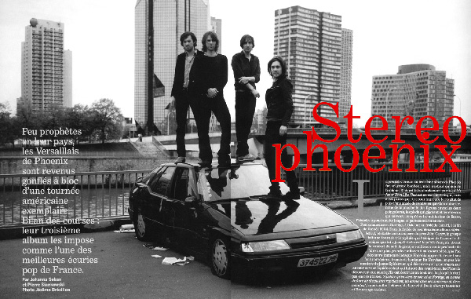
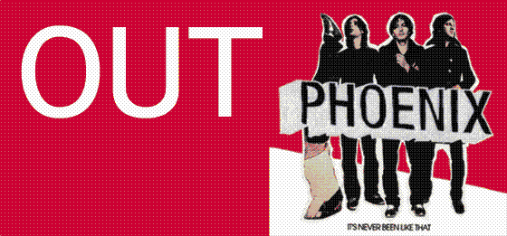
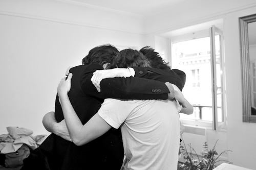
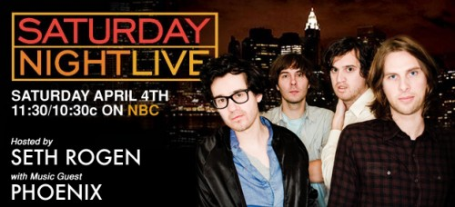
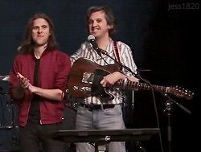


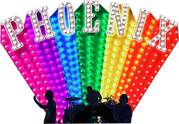
videos
video interviews, livestreams, other
- [2024] thomas interview in argentina
- [2022] branco & thomas primavera sound interview in barcelona
- [2021] live from motorbass studios
- [2019] thomas & branco mini interview in mexico
- [2017] thomas & chris listen to southeast asian music
- [2017] thomas & chris play jam or not a jam (i love this one lol)
- [2017] ti amo song breakdown
- [2017] shaky knees festival interview (worst interview ever its so funny)
- [2014] thomas & branco interview in mexico
- [2013] phoenix teaching french to haim
- [2013] branco & chris mini lollapalooza interview
- [2013] branco & thomas mini bankrupt interview
- [2013] last.fm mini interview
- [2011] branco & chris mini interview in berlin
- [2010] phoenix winning a grammy
- [2007] branco & thomas on ABC TV (i love this one too)
- [2000] branco & deck interview at B72 vienna (this is so fucking rare LOL)
text
articles, interviews, AMAs
- [2022] NME interview
- [2022] phoenix review their albums
- [2022] stereogum interview
- [2022] GQ interview (seems like its behind a paywall now orz)
- [2019] book release interview w/ branco (in french)
- [2018] branco & deck radio interview in melbourne
- [2018] ambient light interview in new zealand
- [2017] scenestr interview in sydney
- [2017] Q magazine interview (scans)
- [2017] quick Q&A in manila
- [2017] branco interview in manila
- [2017] thomas mars & jason schwartzman interview
- [2013] bankrupt! release AMA
documentaries
making of records, tour documentaries, longer interviews, etc
- [2014] initials p.h.o.e.n.i.x (bankrupt documentary)
- [2013] follow phoenix
- [2012] from a mess to the masses
- [2009] musicvision phoenix
- [2004] the diary of alphabetical
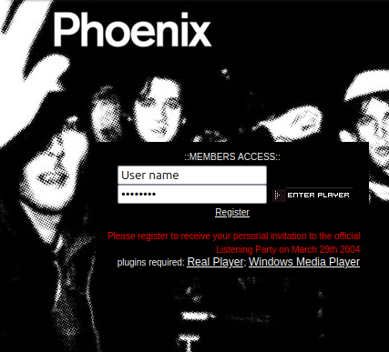
live
full concerts, radio and TV performances, etc
- [2024] live at lollapalooza chile
- [2023] "everything is everything" live
- [2022] live at musée des arts décoratifs
- [2018] live at brooklyn steel
- [2017] live at accorhotels arena paris
- [2013] "entertainment" live in chile
- [2013] live on letterman
- [2013] "trying to be cool" acoustic version
- [2013] live at lollapalooza chicago
- [2010] tiny desk concert
- [2010] acoustic & unlpugged at the interface
- [2009] live on saturday night live
- [2004] live on WOXY radio (i fucking love this one!!)
- [2004] live on some german TV show
- [2001] live at the music factory
- [2001] "too young" at v2001 festival
- [2001] "if i ever feel better" at trash (not sure what year this is from)
- [2000] "too young" at NPA
- [2000] "if i ever feel better" at later